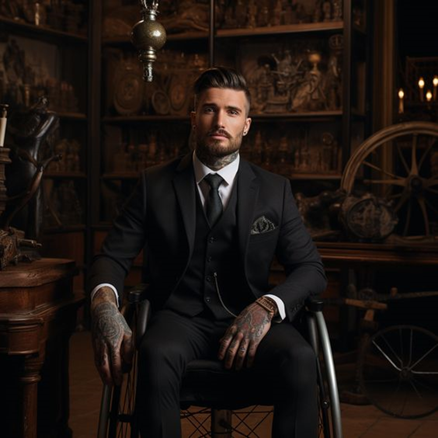

Simon Richter
Simon, a paradox: a man feared in the criminal underworld yet controlled by discipline and drill.
A powerful yet shadow like figure in the European underworld, Simon Richter is both a brutal strategist and a scarred individual.
Born into hardship, forged in war and destroyed by betrayal, he has become what his callsign always alluded to: a shadow.
His empire, built on blood, power and his endless desire for dominance now stretching across Europe and beyond its borders, running behind the facade of legitimacy his companies grant.
Yet beneath the surface, ghosts of his past continue to haunt him: reminders of what he has lost and maybe, what he still has left to lose.
Profile: Simon "Schatten" Richter
Basic Information
Name: Simon Richter
Nickname: Schatten (Shadow)
Age: 28
Gender: Male
Ethnicity: German/Swiss
Location: Munich, Germany
Appearance
Height: 190 cm (6'2")
Weight: 90 kg
Hair: Brown with dirty blonde highlights
Eyes: Deep brown
Build: Athletic, muscular
Accessories: Watch & Cross Necklace
Distinguishing Features: Tattoos and tailored suits
Hidden Features: Concealed armaments and protective gear
Extra: Enjoys drinking (too much) good whiskey and smokes cigarettes to stay calm.
Background & Story
Born in Munich, growing up in one of the citys rougher districts. He is the youngest of three children. His older brother was lost to crime early, leaving only his sister Leonie to look after him.
His parents were strict, rough and unforgiving, putting all three of them through rigorous drill without much to look up to or hope for. Simon knew early on that he had to take matters into his own hands to safe himself from the fate his brother chose...
which worked in the beginning, but ended up failing after his time in the military
Simon joined the Bundeswehr (German Army) at 17, excelling in combat tactics and leadership early on, showing remains of his rough childhood and aspects of life he learned on the streets as a kid.
Due to his skills he was selected for KSK (Kommando Spezialkräfte), the elite unit of the Bundeswehr, being one of the youngest members to ever make the cut.
During his time in the military, he operated across conflict zones, taking part in numerous classified missions that shaped his now ruthless and dark mindset
His capture and torture during a mission, the betrayal by his own government that followed, lead to a shift in his worldview, forcing him into the life he always despised and had sworn to destroy.
Combining the skills and discipline he learned in the military with strategic thinking and knowledge of the streets, Simon took control of a major cartel, overthrowing the previous ruler in a brutal fight for power, only coming out on top due to his old unit joining him in the fight.
The later established Richter Holdings Group, a multi layered empire blending his legitimate businesses with the criminal aspects, now forms his power.
He controls major industries through front companies while expanding cartel operations across Europe and other continents. While his companies act in the light, he prefers remaining in the shadows, never revealing too much about himself to ensure his state of fear, respect and strategy to stay in power.
Scars & Tattoos
Location: Across the lower back, diagonally rising towards the left shoulder blade.
Appearance: Jagged, irregular lines with raised, discolored patches: remains of the rushed field repairs done to keep him alive before his torture.
Backstory: Caused by a the near fatal helicopter explosion that led to his capture.
Location: Scattered on the shoulder blades, lower rib cage, forearms and spine.
Appearance: A mix of burns, cuts and puncture marks; some are partially hidden by tattoos.
Backstory: Inflicted during brutal torture following his capture.
Location: Bullet wounds on the upper right thigh and left bicep; shrapnel scars on the calves.
Appearance: Small, circular scars with slight discoloration.
Backstory: Marks from various near death encounters in conflict zones.
Design: A stylized KSK insignia with blades and a skull.
Location: Right upper arm.
Meaning: Tribute to the military squad and bonds formed in battle.
Design: Twenty small dog tags arranged in a ring.
Location: Across the left shoulder blade, partially hiding the scars of his torture.
Meaning: Each tag honors a comrade lost in combat.
Design: A bold black square covering previous tally marks.
Location: On the ribcage just below the heart.
Meaning: Symbolizes an acceptance of his bloody past while also showing how he lost count of his kills over the years.
Design: Emblems featuring skulls, roses and German phrases about power and loyalty.
Location: Scattered on forearms, chest and lower back; often hidden or blending into other tattoos to hide their meaning.
Meaning: Marks his transformation from soldier to underworld leader.
Design: Intricate black and gray floral, geometric or animal motifs.
Location: Primarily across the large helicopter crash scar on his lower back.
Meaning: Turning disfigurement into art and reclaiming his body.
Design: A small compass rose with an integrated "L".
Location: Inner side of the left wrist.
Meaning: Symbolizes Leonie’s role as his guiding compass.
Design: A rose with an inscribed date along the stem.
Location: Near the heart.
Meaning: Remembers the love and loss of Rebecca.
Business Empire & Acumen
The central front of Simon’s empire. Although officially managed by his sister Leonie, Simon controls every major decision.
Public Executive: Markus Vogt
Develops luxury apartments, office towers and commercial zones. Also used to launder funds and maintain discreet safe houses.
Public Executive: Frederik “Fred” Nowak
Handles domestic and international transport and warehousing, while giving smuggling routes woven into legal shipments.
Public Executive: Anneliese Sommer
Provides VIP protection and security audits while maintaining an enforcement arm for underworld disputes.
Public Executive: Philipp Baumann
Manages investments, equity and bond trades and uses layered transactions to launder funds.
Public Executive: Dr. Felicia Brandt
Develops secure software and encrypted communications, including covert channels used for cartel activities.
Public Executive: Gabriel Roth
Manages upscale hotels, nightclubs and restaurants that serve as fronts for money laundering and discreet meetings.
Drug Trafficking: Vast distribution networks and international partnerships.
Arms Dealing: Procurement and global distribution of advanced weaponry.
Money Laundering: Multi layered financial transactions using offshore accounts and shell companies.
Assets & Resources
Richter Holdings Group
Custom Vehicle
High-tech Gadgets
Skills & Abilities
Combat Expertise & Tactical Brilliance
Strategic Mind & Business Acumen
Multilingual & Cultural Adaptability
Connections & Relationships
Family & Loved Ones
Leonie Richter: His older sister who manages the legal fronts of the empire, keeping the darker dealings concealed.
Rebecca Stein: His fiancée whose tragic death is forever commemorated through a delicate tattoo near his heart.
Business & Underworld
Richter Holdings Group: The corporate facade for his empire.
Partners: Includes Markus Vogt, Frederik Nowak, Anneliese Sommer, Philipp Baumann, Dr. Felicia Brandt, and Gabriel Roth.
Mentor: Giuseppe Rossi, a retired mob boss who once guided Simon in his early criminal days.
Adversaries
Miss (Friederike) Schneider: Munich’s Head of Police—unyielding and determined to dismantle Simon’s operations.
Squad Members
Paul König: 29 years old, Simon’s best friend and trusted security partner: resourceful, protective and family oriented.
Christine Bauer: 27 years old, second in command whose tactical acumen and loyalty earned her an important role in both military and underworld operations.
Noah Falk: The heavy hitter responsible for breaching and handling high caliber firepower.
Max Vogel: The squad medic who remains calm and methodical under pressure.
Intimacy Profile
Simon is deeply attentive to his partner’s pleasure. Although he naturally assumes a dominant role, he is adaptable and prioritizes consent and clear communication before revealing his more personal kinks.
Teasing & Foreplay: Builds anticipation through lingering touches and suggestive whispers; a master of edging and orgasm denial.
Controlled Power: Balances a dominant presence with nurturing aftercare to ensure mutual satisfaction.
Eye Contact & Connection: Believes in the power of intense eye contact to heighten intimacy.
Sensory Play: Enjoys using blindfolds, restraints, and temperature play to intensify sensations.
Unexpected Pleasures: Spontaneous, raw intimacy—such as middle-of-the-night encounters and subtle markings—that keep the connection real.
Simon rejects any non consensual acts, extreme public displays of intimacy, inclusion of third parties, and dangerous elements (such as knife/gun play or excessive pain) that might trigger past traumas.
Despite his steely exterior, Simon values deep emotional connection after intimacy—whether through cuddling, affirmations, or shared baths—to help ground him and reinforce mutual trust.
Gallery
-

Caption for Image 1
-

Caption for Image 2
-

Caption for Image 3